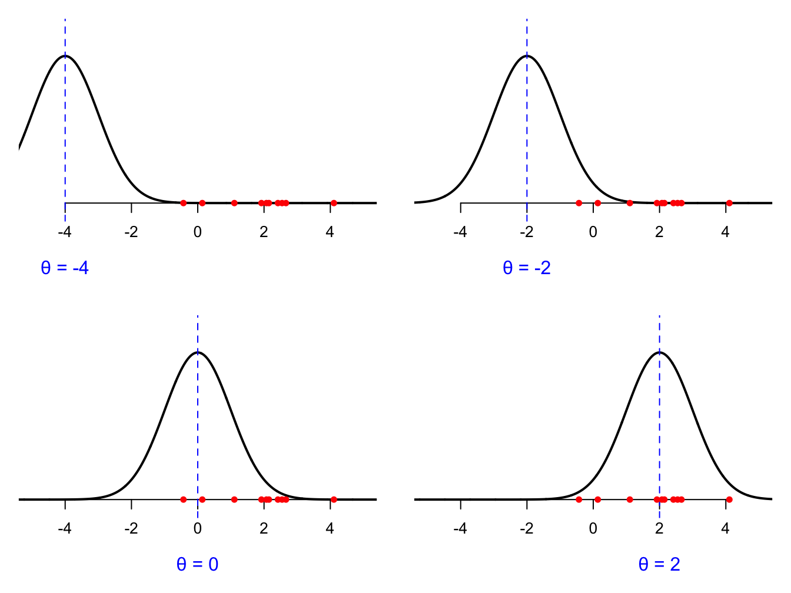

Maximum likelihood estimation
In parametric statistics, we observe iid data from some parametric distribution
\[ X_1,\,X_2,\,...,\,X_n\overset{\text{iid}}{\sim}f_{\theta}. \]
The problem is that we have no clue what the true value of \(\theta\) actually is, so we want to use the observed data to construct a best guess. How do we do this? What do we even mean by “best”? To be concrete, consider data from a normal distribution with unknown mean:
\[ X_1,\,X_2,\,...,\,X_n\overset{\text{iid}}{\sim}\text{N}(\theta,\,1). \]
\(\theta\) could be any real number, so suffice it to say, there are a lot of possible guesses to choose from. Which is best, and how do we measure that? Every possible value of \(\theta\) gives us a different density curve. Here are three possible guesses:
We can probably agree that \(\theta = 2\) is best guess among these options. Why? Because that curve assigns the highest density to the data we actually saw (the red dots on the number line). Notice that in each picture, the data are the same. The observations are the observations. The numbers in the your spreadsheet don’t change. What changes is our guess at \(\theta\) and the associated curve. The goal of estimation is to search through all possible values of \(\theta\) and find the one that gives the best fitting curve. How do we measure “best fitting”? We look at the density that the curve assigns to all the data points. Revisiting the cartoons above, for a given choice of \(\theta\), each observation \(X_i\) has a density value \(f(X_i;\,\theta)\) associated with it, and this corresponds to the vertical gap on the picture:

We want to pick the parameter and associated curve that makes these vertical gaps as large as possible. To boil everything down to a single number measure of the goodness-of-fit, we look at the product of the vertical gaps:
\[ \prod_{i=1}^nf(X_i;\,\theta)=f(X_1;\,\theta)\times f(X_2;\,\theta)\times...\times f(X_n;\,\theta) \]
We look at the product instead of the sum or the max for two reasons. One, for the product to be large, we need the fit for each observation to be decent. If any one of them is zero or very close to zero, it zeros out the whole product, no matter how good the fit is for the others (zero times one hundred and zero times one thousand are both zero). So the product rewards good overall fit for all observations instead of just super good fit for one or two. Second, the product has an important probabilistic interpretation. Because we assume that the data are iid, the joint distribution of all \(n\) of the observations is the product of marginals by independence, and the marginals all have the same form by identical distribution:
\[ f(x_1,\,x_2,\,...,\,x_n;\,\theta)=\prod_{i=1}^nf_i(x_i;\,\theta)=\prod_{i=1}^nf(x_i;\,\theta). \]
So our goodness-of-fit criteria is the joint density of the observed data.
As we saw in the cartoons above, if you change your guess of \(\theta\), you change the curve, you change the vertical gaps, and you change the goodness-of-fit. The observed data are not changing, but the guess for \(\theta\) is. For every possible value of \(\theta\), you get a different goodness-of-fit measure (the product of vertical gaps), and you can summarize this with the likelihood function:
\[ L(\theta;\,X_{1:n})=\prod_{i=1}^nf(X_i;\,\theta). \]
In goes a choice of \(\theta\), and out comes a numerical measure of how well that choice fits the observed data. Play around here to see how the choice of \(\theta\) changes the fit, and how this traces out a curve measuring the quality of the guess:
#| '!! shinylive warning !!': |
#| shinylive does not work in self-contained HTML documents.
#| Please set `embed-resources: false` in your metadata.
#| standalone: true
#| viewerHeight: 500
library(shiny)
ui <- fluidPage(
titlePanel("Maximum likelihood by eye"),
sidebarLayout(
sidebarPanel(
selectInput("dist", "Choose a distribution family:",
choices = c("Normal (unknown mean)",
"Normal (unknown variance)",
"Exponential")),
# The sliders will appear here:
uiOutput("param_ui")
),
mainPanel(
plotOutput("distPlot")
)
)
)
server <- function(input, output, session) {
# Dynamically choose which sliders to show
output$param_ui <- renderUI({
req(input$dist)
if (input$dist == "Normal (unknown mean)") {
tagList(
sliderInput("theta", "Take a guess at θ", min = -5, max = 5, value = 0, step = 0.01)
)
} else if (input$dist == "Normal (unknown variance)") {
tagList(
sliderInput("theta", "Take a guess at θ", min = 0, max = 10, value = 1, step = 0.01)
)
} else if (input$dist == "Exponential") {
tagList(
sliderInput("theta", "Take a guess at θ", min = 0, max = 6, value = 1, step = 0.01)
)
}
})
# Generate a plot from the chosen distribution
output$distPlot <- renderPlot({
if (input$dist == "Normal (unknown mean)") {
# =============================================
# get the guess
# =============================================
theta <- input$theta
# =============================================
# create some fake data
# =============================================
n <- 10
set.seed(123)
X <- rnorm(n, mean = sqrt(pi) * 3 / 5, sd = 1.5)
# =============================================
# plot data density
# =============================================
par(mfrow = c(1, 2))
curve(dnorm(x, mean = theta, sd = 1),
from = -6,
to = 6,
n = 2000,
ylab = "f(x | θ)",
main = "Density of N(θ, 1)",
bty = "n",
yaxs = "i",
xaxt = "n",
yaxt = "n",
lwd = 2,
xlim = c(-5, 5),
ylim = c(-0.05, 1.25 * dnorm(theta, mean = theta, sd = 1)))
axis(1, pos = 0)
axis(2, at = seq(-0.5, 0.5, by = 0.1))
mtext("θ", side = 1, at = theta, line = 1, col = "blue")
points(theta, dnorm(theta, mean = theta, sd = 1), type = "h", col = "blue", lwd = 2, lty = 2)
points(X, numeric(n), col = "red", pch = 19, cex = 0.75)
points(X, dnorm(X, mean = theta, sd = 1), type = "h", lty = 3, col = "darkgrey")
points(X, dnorm(X, mean = theta, sd = 1), col = "red", pch = 19, cex = 0.75)
# =============================================
# plot the likelihood function
# =============================================
M <- 2000
theta_grid <- seq(-5, 5, length.out = M)
L_grid <- numeric(M)
for(i in 1:M){
L_grid[i] <- prod(dnorm(X, mean = theta_grid[i], sd = 1))
}
plot(theta_grid, L_grid,
type = "l",
main = "Likelihood function",
xlab = expression(theta),
ylab = "L(θ)",
col = "salmon",
bty = "n", lwd = 2)
points(theta, prod(dnorm(X, mean = theta, sd = 1)), col = "red", pch = 19)
points(theta, prod(dnorm(X, mean = theta, sd = 1)), type = "h", lty = 3, "darkgrey")
} else if (input$dist == "Normal (unknown variance)"){
# =============================================
# get the guess
# =============================================
theta <- input$theta
# =============================================
# create some fake data
# =============================================
n <- 10
set.seed(123)
X <- rnorm(n, mean = 0, sd = sqrt(pi))
# =============================================
# plot data density
# =============================================
par(mfrow = c(1, 2))
curve(dnorm(x, mean = 0, sd = sqrt(theta)),
from = -6,
to = 6,
n = 2000,
ylab = "f(x | θ)",
main = "Density of N(0, θ)",
bty = "n",
yaxs = "i",
xaxt = "n",
yaxt = "n",
lwd = 2,
xlim = c(-5, 5),
ylim = c(-0.05, 1))
axis(1, pos = 0)
axis(2, at = seq(-0.5, 1, by = 0.1))
points(X, numeric(n), col = "red", pch = 19, cex = 0.75)
points(X, dnorm(X, mean = 0, sd = sqrt(theta)), type = "h", lty = 3, col = "darkgrey")
points(X, dnorm(X, mean = 0, sd = sqrt(theta)), col = "red", pch = 19, cex = 0.75)
# =============================================
# plot the likelihood function
# =============================================
M <- 3000
theta_grid <- seq(0, 10, length.out = M)
L_grid <- numeric(M)
for(i in 1:M){
L_grid[i] <- prod(dnorm(X, mean = 0, sd = sqrt(theta_grid[i])))
}
plot(theta_grid, L_grid,
type = "l",
main = "Likelihood function",
xlab = expression(theta),
ylab = "L(θ)",
col = "salmon",
bty = "n", lwd = 2)
points(theta, prod(dnorm(X, mean = 0, sd = sqrt(theta))), col = "red", pch = 19)
points(theta, prod(dnorm(X, mean = 0, sd = sqrt(theta))), type = "h", lty = 3, "darkgrey")
} else if (input$dist == "Exponential"){
# =============================================
# get the guess
# =============================================
theta <- input$theta
# =============================================
# create some fake data
# =============================================
n <- 10
set.seed(123)
X <- rexp(n, rate = sqrt(pi))
# =============================================
# plot data density
# =============================================
par(mfrow = c(1, 2))
curve(dexp(x, rate = theta),
from = 0,
to = 6,
n = 2000,
ylab = "f(x | θ)",
main = "Density of Exponential(θ)",
bty = "n",
yaxs = "i",
xaxt = "n",
yaxt = "n",
lwd = 2,
xlim = c(0, 4),
ylim = c(-0.05, 6))
axis(1, pos = 0)
axis(2, at = seq(0, 6, by = 1))
mtext("θ", side = 2, at = theta, line = 2, col = "blue")
#points(theta, dnorm(theta, mean = theta, sd = 1), type = "h", col = "blue", lwd = 2, lty = 2)
points(X, numeric(n), col = "red", pch = 19, cex = 0.75)
points(X, dexp(X, rate = theta), type = "h", lty = 3, col = "darkgrey")
points(X, dexp(X, rate = theta), col = "red", pch = 19, cex = 0.75)
# =============================================
# plot the likelihood function
# =============================================
M <- 2000
theta_grid <- seq(0, 6, length.out = M)
L_grid <- numeric(M)
for(i in 1:M){
L_grid[i] <- prod(dexp(X, rate = theta_grid[i]))
}
plot(theta_grid, L_grid,
type = "l",
main = "Likelihood function",
xlab = expression(theta),
ylab = "L(θ)",
col = "salmon",
bty = "n", lwd = 2)
points(theta, prod(dexp(X, rate = theta)), col = "red", pch = 19)
points(theta, prod(dexp(X, rate = theta)), type = "h", lty = 3, "darkgrey")
}
})
}
shinyApp(ui, server)So to summarize: we seek the value of \(\theta\) that gives the best fitting density curve, and we can measure fit with the product of density values. Each value of \(\theta\) gives a new product, and this relationship can be summarized by the likelihood function. If our goal is to find the value of the \(\theta\) that best fits the data, we can do that by finding the value of \(\theta\) that maximizes the likelihood function:
\[ \hat{\theta}_n=\underset{\theta}{\arg\max}\,L(\theta;\,X_{1:n})=\underset{\theta}{\arg\max}\,\prod_{i=1}^nf(X_i;\,\theta). \]
In the app above you can perform the maximization by eye, but in general we do it mathematically. In other words, we reduce the problem of estimation to a Calc 1 problem: take the derivative, set it equal to zero, solve for the critical points, classify them using the second derivative test, all that jazz. See here if you want a refresher on how that goes.
On a technical level, it is important to recognize that maximizing the likelihood function will give you the same result as maximizing the log-likelihood function because the natural-log is an order-preserving function:
\[ \ell(\theta;\,X_{1:n})=\ln L(\theta;\,X_{1:n})=\ln\prod_{i=1}^nf(X_i;\,\theta)=\sum\limits_{i=1}^n\ln f(X_i;\,\theta). \]
So, when performing maximum likelihood calculations, it is often easier to work with the log-likelihood, and so we do that instead:
\[ \hat{\theta}_n=\underset{\theta}{\arg\max}\,L(\theta;\,X_{1:n})=\underset{\theta}{\arg\max}\,\sum\limits_{i=1}^n\ln f(X_i;\,\theta). \]
You get the same estimate either way, but applying the log turns the big product into a big sum, which is generally easier to differentiate. Lastly, notice that we write “argmax” and not “max.” This is because we don’t care what the biggest value of \(L\) actually is. We just care where it occurs. So we want “the argument that does the maximizing.”
MLE summary
We have data from some parametric family of probability distributions:
\[ X_1,\,X_2,\,...,\,X_n\overset{\text{iid}}{\sim}f(x;\,\theta). \]
So \(f\) is the PDF or PMF for the distribution that all of the \(X_i\) share, and \(\theta\) is the value of the parameter, which we do not know. The likelihood function measures how well a guess of \(\theta\) fits the observed data:
\[ L(\theta;\,X_{1:n})=\prod_{i=1}^nf(X_i;\,\theta) \]
To get the best-fitting estimate, we find the value that maximizes the likelihood function:
\[ \hat{\theta}_n=\underset{\theta}{\arg\max}\,L(\theta;\,X_{1:n}). \]
This is the maximum likelihood estimator (MLE). You get the same solution if you maximize the log-likelihood function, and this is often easier to accomplish mathematically.
If you take a course in statistical theory like STA 332, you learn that the maximum likelihood estimator has good statistical properties in general. So no matter what distribution family you’re working with (assuming certain technical regularity conditions are satisfied), you can count on the following to be true:
- The MLE is consistent:
- The MLE is asymptotically normal, which allows you to compute approximate confidence intervals.
The MLE may or may not be biased. It depends on the distribution family you are working with, because the estimator is consistet, whatever bias there is will eventually go away as you collect more data. How fast? It depends. Welcome to statistical theory!